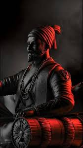

THE HESTORY OF MARATHA
 Chhatrapati Shivaji Maharaj (February 19, 1627 – April 3, 1680) is a principle of effulgence, rather a divine inspiration. He is certainly not human, he is God. Shivaji Maharaj is a Primal God who took birth in a divine and pure culture. In history, no other religion has produced such an immaculate personality. One has yet to see a monarch who despite being powerful did not use his powers to torment, who despite being glorified was not arrogant, who conquered valorous enemies and who despite being a human functioned as a God !
 Jijabai was Shahjiraje’s wife and Chatrapati Shivaji Maharaj’s mother, she was the queen and Rajmata too. She moulded him into an ideal ruler by sowing seeds of devotion to the nation and Dharma. She was not only a mother to Shivaji, but also a source of inspiration. She had a strong faith that she was blessed by Goddess Bhavani and Mahadev. She strongly believed that our efforts bring success to our doorstep only with the grace of God. Entire Hindu community is grateful to God for having set an example before us in the form of Rajmata Jijabai.
Jijabai was Shahjiraje’s wife and Chatrapati Shivaji Maharaj’s mother, she was the queen and Rajmata too. She moulded him into an ideal ruler by sowing seeds of devotion to the nation and Dharma. She was not only a mother to Shivaji, but also a source of inspiration. She had a strong faith that she was blessed by Goddess Bhavani and Mahadev. She strongly believed that our efforts bring success to our doorstep only with the grace of God. Entire Hindu community is grateful to God for having set an example before us in the form of Rajmata Jijabai.